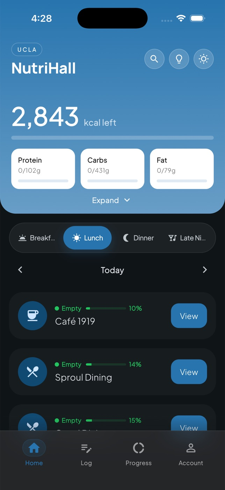
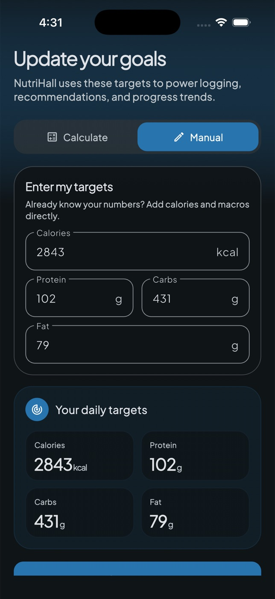
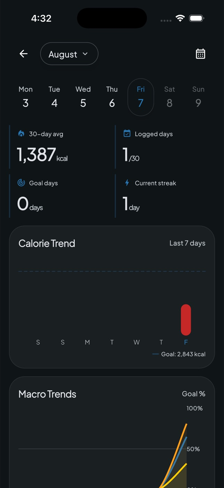

01
Every school gets its own adapter
Dining menus don't follow one format, so each school has its own scraper adapter behind a single API. One school changing its site breaks only that school, and adding a new one doesn't touch the others.
Dining hall menus, nutrition and hours for 36 universities in one iOS app, with meal recommendations that hit your remaining macros.
Pick your school and NutriHall shows what every dining hall is serving right now, with full nutrition for each dish. Set your calorie and macro targets, and it recommends dishes and portion sizes that fit what you have left for the day.



The app is Flutter and Firebase. Menus come from a Python and FastAPI backend running on Railway, which pulls from six different dining platforms through their undocumented APIs. Scraper failures send alerts, GitHub Actions handles the schools that block server IPs, and Crashlytics reports open GitHub issues automatically. It's covered by 117 Flutter tests and 86 pytest tests.
For growth, I built an analytics dashboard in Node and React on top of Firebase Analytics data in BigQuery, with SQL for daily and weekly actives, cohort retention and onboarding funnels.
Dining menus don't follow one format, so each school has its own scraper adapter behind a single API. One school changing its site breaks only that school, and adding a new one doesn't touch the others.
Retention and funnel numbers show 95% Wilson intervals, so a small week of users doesn't get read as a real trend.
Some schools block requests from cloud servers, so those menus are fetched by scheduled GitHub Actions jobs instead of the main backend.